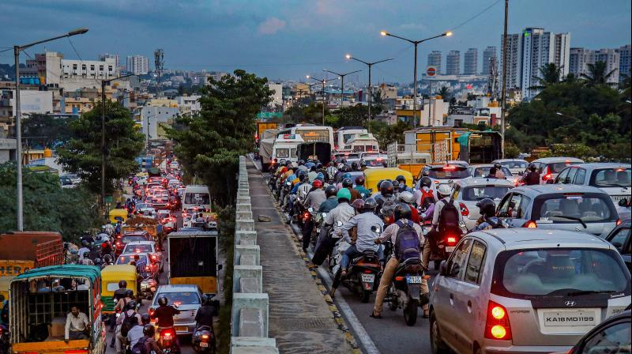
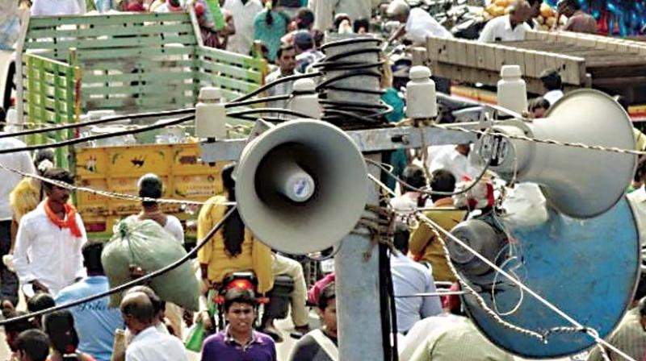

Noise pollution is the propagation of noise with ranging impacts on the activity of human or animal life, most of them harmful to a degree. The source of outdoor noise worldwide is mainly caused by machines, transport, and propagation systems. Poor urban planning may give rise to noise disintegration or pollution, side-by-side industrial and residential buildings can result in noise pollution in the residential areas. Some of the main sources of noise in residential areas include loud music, traffic, construction, electrical generators, wind turbines, etc.
 